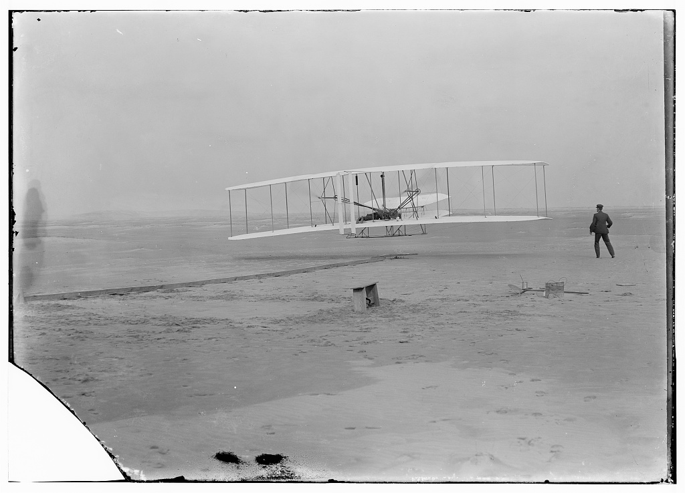
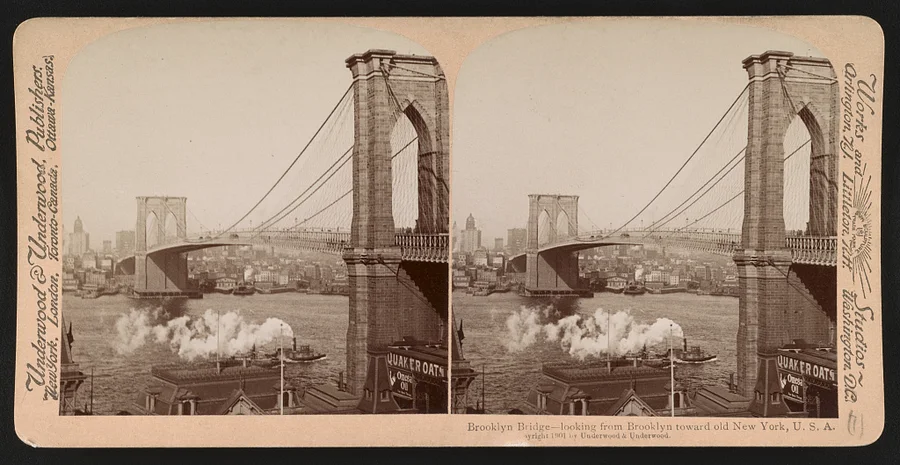

American History · Chapter lesson
An industrial nation, connected by new ideas
Read a short illustrated account, examine primary sources, and discuss the evidence.
1877–1917
An industrial nation, connected by new ideas
Immigration, railroads, factories, and growing cities transformed daily life. Workers organized for safer conditions and fairer pay. Engineers and inventors helped build bridges, aircraft, and communications systems. Their achievements depended on teams, earlier discoveries, and labor that famous-inventor stories can overlook.
Discuss: What other evidence would you want before calling an experiment successful?
Library of Congress: Wright brothers papers →
